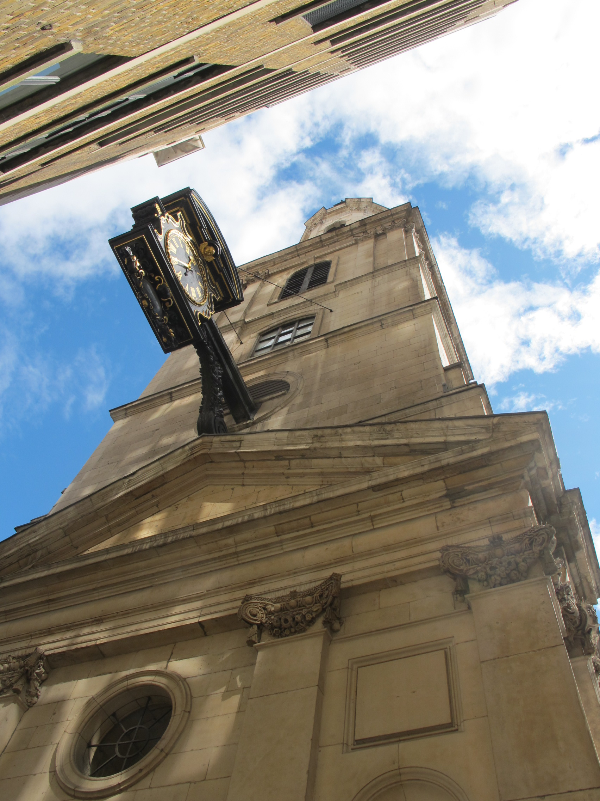

Chapter 4
The Parish of St. Magnus the Martyr
The parish constable made his final rounds as the light failed on Saturday evening, 1 September 1666, the same stillness that had settled over London the hour before, when Farriner raked his coals and climbed his stair above the bakery. He carried a lantern and a staff, moving through lanes already darkened by the overhang of jettied storeys above. His route took him past the shuttered warehouses on Thames Street, where the day’s commerce in oil and hemp and sea-coal had ended with the locking of doors and the securing of hatches. He noted what he was required to note: the watch posted at the corner of Pudding Lane, the parish pump accessible, no obvious signs of disorder.
He also noted what he lacked authority to alter. A cart had been left blocking the entrance to Bear Lane, its wheels sunk in the mud of a summer drought. Behind it, piled against the wall of a warehouse, a stack of timber encroached on the space where the parish conduit emerged from the ground.
The conduit was one of several that drew water from the Thames through lead pipes, distributing it to cisterns for domestic use and firefighting. The cart and the timber had been there for days. They would be there tomorrow. The constable recorded nothing. The obstruction was someone else’s inconvenience, and everyone knew whose.
This was St. Magnus the Martyr, one of the smallest parishes in the city of London, yet one of the most consequentially situated.
Its southern boundary ran along Thames Street, parallel to the river, and at its southeastern corner stood the northern foot of London Bridge.
The bridge was the only fixed crossing of the Thames for miles in either direction—a choke-point for trade and traffic through which passed the grain of Kent, the timber of Sussex, the coal of Newcastle, the wine of Bordeaux, and the manufactured goods of London workshops bound for export. The bridge itself was a street built across water, lined with houses and shops, its narrow arches constricting the river’s flow and creating such treacherous currents that vessels often unloaded at the wharves upstream rather than attempt passage.
The result was a concentration of maritime commerce along the riverfront from the bridge to the Tower, a dense packing of warehouses, cranes, and quays that made this corner of the metropolis a hub of legitimate profit and accumulated risk. Pudding Lane, where Thomas Farriner’s bakery stood, ran between Eastcheap and Thames Street in this precise zone.
The geography had shaped the built environment over centuries. The demand for storage space near the wharves had driven builders upward and inward, creating a topography of jettied timber-framed houses that leaned toward each other across lanes barely wide enough for passage. The jetties—upper storeys projecting beyond the ground floor—maximized floor space on expensive ground. They also created a continuous canopy of wood and plaster overhead, reducing the lanes to tunnels where light penetrated only at midday and where a fire in any single structure could spread laterally by direct contact or by falling brands.
The construction was not universally ancient. The parish had seen rebuilding after earlier fires, and some structures dated from the mid-century. But rebuilding had followed the same pattern because the economic logic had not changed: proximity to the river and the bridge commanded premium rents, and every square foot of floor space returned its value in the volume of goods stored and handled.
The warehouses were the critical mass. They lined Thames Street and the lanes running down to the river, packed with materials that fed London’s industries and heated its hearths. Train oil, rendered from whale blubber, stood in barrels for lamps and leather-dressing. Hemp, tar, and pitch arrived in bales for ropewalks and shipyards. Tallow filled casks for candle-making. Sea-coal accumulated in heaps and sacks. These were not exotic hazards. They were the ordinary stock of legitimate trade, handled by established merchants with vested interests in their security. But security was understood in terms of commercial accounting rather than physical safety. A warehouse represented capital at rest, inventory awaiting sale or shipment, its value measured in market price. The risk of fire was one entry in a ledger of probabilities, balanced against insurance costs where available, prevention costs where required, and storage rents driven upward by competition for riverfront location.
This calculus of risk and return governed decisions at every level. A merchant might invest in iron shutters or brick vaulting for his most valuable stock, or he might rely on the parish pumps and the general vigilance of the watch. He might clear the lane outside his warehouse to ensure access for firefighting, or he might use that space for temporary storage of goods awaiting shipment, trusting that any emergency could be managed when it arose. The incentives favored the latter choice. Space was money. Obstruction was normal. The parish by-laws against encroachments were enforced selectively, when they were enforced at all, because the churchwardens who administered them were drawn from the same merchant class that benefited from the flexibility.
The parish mechanisms for collective defense reflected these priorities. The churchwardens, elected annually from among the householders, maintained the parish pumps and conduits, supervised the watch, and enforced by-laws governing nuisances and obstructions. The watch itself was a duty rotated among male parishioners, who patrolled from nine in the evening until dawn, calling the hours and looking for signs of fire or disorder. These were not professional firefighters. They were bakers, merchants, craftsmen, and laborers, serving their turn with lanterns and staves, equipped to raise an alarm and perhaps to assist in initial response, but not to confront serious conflagration. The equipment for that purpose—leather buckets, fire hooks for pulling down thatch or boarding, ladders—was stored in the parish church or designated locations, its maintenance another churchwarden responsibility.
The system presumed that any fire would be small and local, that the alarm would bring neighbors to assist, and that the first priority would be preventing spread rather than saving the burning structure. This presumption was built into the physical environment and the legal framework that governed it. A man could not be compelled to alter his house or create firebreaks at his own expense for the hypothetical benefit of neighbors. The parish could order removal of specific hazards: overhanging signs, projecting jetties, accumulations of combustible material. But enforcement was reactive and contested, dependent on complaints and the willingness of churchwardens to confront influential parishioners. The records show repeated orders and presentments, followed by partial compliance, delay, and renewed violation. The problem was not ignorance of risk but the structure of incentives that made correction more costly than tolerance.
The water supply illustrated this gap between available resources and effective deployment. The Thames was immediately adjacent, a vast reservoir that could in theory supply any quantity of water for firefighting. Access was obstructed by the warehouses and wharves lining the riverfront, by cranes and staging extending over the water, and by the physical difficulty of moving water from river level to street level in quantity. The parish conduits were meant to solve this problem, drawing water through lead pipes to public cisterns and private connections. Yet they were vulnerable to the same pressures of private interest that shaped the streets above. A cart blocking a lane impeded access to a cistern. A warehouse built over a conduit made maintenance impossible. The pipes were aging, prone to leakage and contamination. The water reaching the cisterns was often inadequate in pressure and volume for anything beyond domestic use.
The obstruction was not merely physical. It was jurisdictional and conceptual. St. Magnus was bounded by the parishes of St. Margaret New Fish Street, St. Dunstan in the East, and All Hallows the Great, each with its own churchwardens, its own watch, its own conduits.
The riverfront was divided among wharfingers and lightermen with their own privileges and obligations. The bridge itself was a separate jurisdiction, administered by the Bridge House Trust, its houses and shops subject to different regulations. Above the parish level, the ward of Bridge Within and the City Corporation held authority over streets and markets, while the Lord Mayor and aldermen governed the city as a whole.
This was not chaos. It was a functioning system of distributed authority that had evolved to manage the complexities of urban life. But it was designed for commerce and order, not for emergency. A fire crossing parish boundaries, overwhelming the local watch, requiring coordinated action across multiple jurisdictions—such a fire would find no ready mechanism for response.
Why had this system persisted? The answer lies in the political economy of Restoration London and the specific history that had shaped it. The Restoration of 1660 had returned the monarchy, but it had not dismantled the corporate liberties that the City of London had defended through eleven years of suspended monarchy. The Corporation of London persisted as a semi-autonomous polity, its charter rights guarded against royal encroachment, its internal governance distributed among wards and parishes whose officers were elected by the freemen and householders. This was liberty in the contemporary understanding: not abstract freedom but chartered privilege, the protection of property and local self-government against arbitrary power from above.
The price of this liberty was fragmentation. The Corporation could not impose uniform building codes or fire regulations without the consent of its constituent parts. The wards and parishes defended their particular privileges against the Corporation. Individual householders defended their property rights against any collective imposition. The result was a city optimized for commerce rather than safety, that had accumulated risk in proportion to its prosperity, and that had disabled mechanisms that might have reduced that risk. The inhabitants did not perceive themselves as living in a firetrap. They perceived themselves as living in a place of opportunity, where the traffic of bridge and river brought goods and money within reach of those with skill and enterprise. The risks were known and accepted, folded into daily routine.
The human geography of St. Magnus layered further complexity onto this structure. At the top of the hierarchy stood the merchants and master craftsmen who owned property, held parish office, and controlled networks of credit and supply. Below them, journeymen and apprentices lived in masters’ households or rented rooms, their livelihoods dependent on trade continuation. At the bottom, the poor and transient occupied the least desirable spaces—cellars, attics, cramped quarters subdivided from larger rooms—paying rent they could barely afford for shelter that barely sufficed. Parish records show constant effort to distinguish “deserving” poor who might receive relief from vagrants and “masterless men” to be driven out. This was economy, not cruelty: the poor rate was a tax on householders, its distribution a matter of contested negotiation.
The networks of credit bound these levels together in mutual dependence. A baker like Thomas Farriner, whose bakehouse stood on the eastern side of Pudding Lane near its intersection with Thames Street, needed flour from factors who imported it, credit from merchants who advanced payment against future delivery, customers among households and tradesmen of the parish and beyond. His status as churchwarden indicated his standing: not wealthy by standards of great merchants, but established, respectable, trusted with parish responsibility. The role was partly honorific, recognition of success, but also administrative and judicial. He helped set the poor rate, supervised collection, adjudicated disputes over settlement and relief. He was the interface between individual household and collective institutions.
This was the world that would confront the spark: overlapping authorities and competing interests, physical conditions maximizing concentration of combustible materials and minimizing space for maneuver, social bonds creating solidarity in normal times and potential paralysis in crisis. The specific arrangements can be traced in parish records and physical traces that survived the fire. The conduits were obstructed. The lanes were blocked by carts and permanent encroachments—steps, stalls, piles of merchandise—tolerated because they served commercial convenience. The watercourses that should have provided reserve supply were polluted or built over. The warehouses holding the most dangerous materials were also the most valuable properties, their owners possessing influence to resist inspection or regulation.
These conditions were not secrets. They were subjects of repeated orders and presentments, of complaints to wardmote and Court of Aldermen, of private lawsuits and public proclamations. In 1662, the Corporation had appointed commissioners to survey the city and recommend improvements for fire prevention. Their report identified the narrowness of streets, the overhang of jetties, the storage of combustible materials, the inadequacy of water supply. Little had been implemented. The recommendations required powers of compulsory purchase and demolition that the Corporation did not possess and the property-holding citizens would not grant. The commissioners had proposed a fire engine, a new invention then appearing in continental cities: a pump on wheels, force-fed by men operating handles, capable of projecting water with pressure and direction. The Corporation had debated the cost. None had been acquired.
The parish of St. Magnus thus exemplified a general condition of Restoration London. The city had grown in population and commercial activity beyond its medieval framework’s capacity, yet the framework persisted because it distributed power and profit in ways that no coalition had both interest and capacity to alter. The Corporation defended chartered liberties against royal encroachment. The wards and parishes defended particular privileges against the Corporation. Individual householders defended property rights against collective imposition. The result was a city admirably free by contemporary standards: free of arbitrary taxation, free of centralized planning, free of absolutist control. It was also a city that had traded safety for prosperity, that had normalized risk through daily habit, and that would find its distributed defenses inadequate to any emergency exceeding local scale.

The fire would test this system at every level. The initial alarm would be local, raised by watch or victims. The response would be local, dependent on parish pumps and buckets and neighbors’ willingness to assist. When that proved inadequate, appeal would go to ward, to Lord Mayor, to King—each step requiring communication across jurisdictions, each decision constrained by need to preserve property and authority, each action delayed by physical difficulty of moving through narrow streets crowded with goods and people. The failure would not be single moment of paralysis but cumulative series of choices and non-choices, each reasonable in immediate context, each contributing to catastrophe that no individual had chosen or foreseen.
Thomas Farriner raked his coals and climbed his stair that Saturday evening as he had done a thousand times before. The routine was complete. The risk was normalized. The spark that would find the tinder was already present, held in embers beneath ash, waiting for draft that would revive it. Around him, the parish of St. Magnus settled into its customary watchfulness: the constable completing his rounds, the watchman taking his post, the carts and timber remaining where they had been left, the conduit running sluggish behind its obstruction of wood and private convenience. The system was not broken. It was functioning exactly as designed, optimized for the commerce of ordinary days and vulnerable to the emergency that the ordinary days had made inevitable.
The image of the obstructed parish conduit, a vital resource rendered useless by local priorities, hands off a system at peak vulnerability, making the imminent spark feel inevitable.